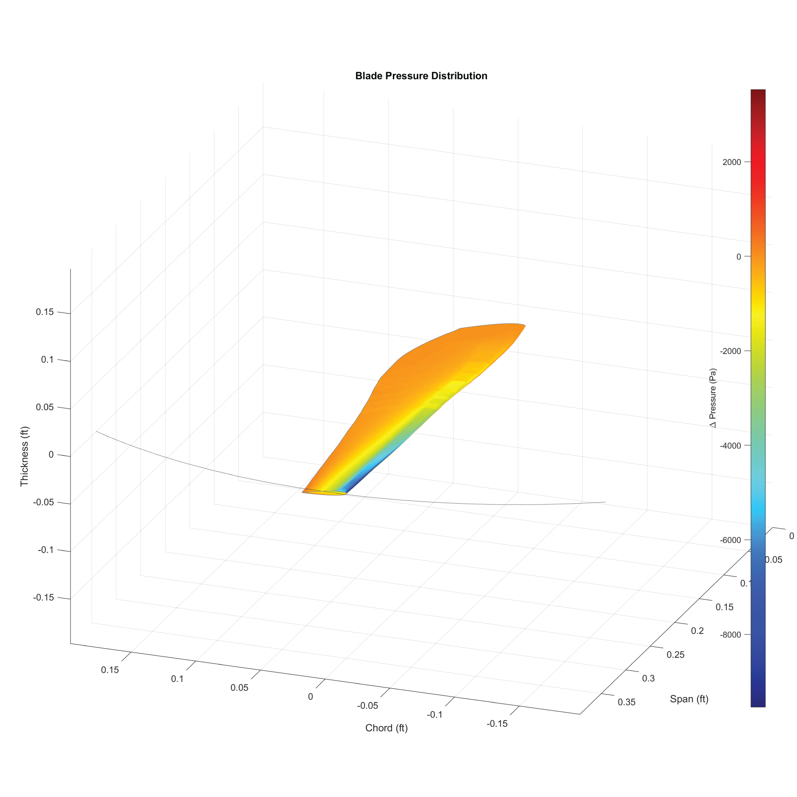
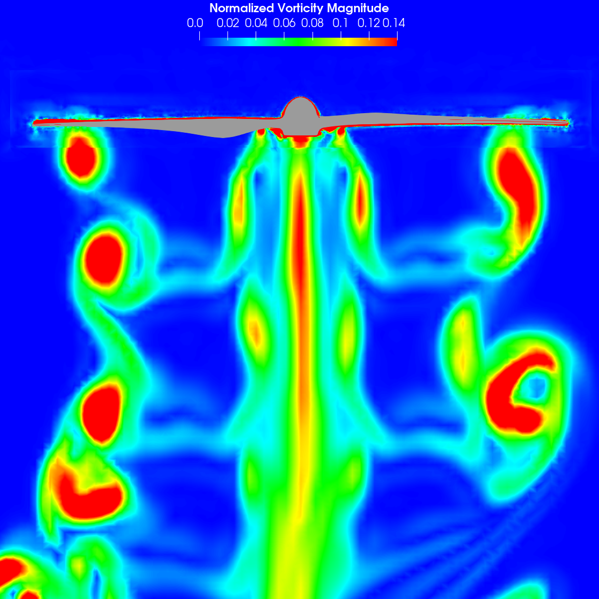

Test Article
1/5-scale Joby 2017 eVTOL propeller with five blades and diameter D = 0.6096 m. The experimental pitch setting is 16 degrees at 75% span.
Multi-fidelity analysis of a five-blade eVTOL propeller in hover, edgewise flight, and ground effect, connecting rotor loading, wake redirection, acoustic integration, and noise prediction.
1/5-scale Joby 2017 eVTOL propeller with five blades and diameter D = 0.6096 m. The experimental pitch setting is 16 degrees at 75% span.
DDES focuses on 4000 RPM hover and 10 m/s edgewise flight, from the out-of-ground-effect baseline to a 2R rigid-ground case. CHARM then sweeps RPM and clearances of 2R, 1R, and 0.5R.
The simulations are compared with Virginia Tech/NASA-ULI measurements, including thrust, torque, far-field spectra, OASPL, directivity maps, and beamforming trends from a 251-channel microphone array.
The high-fidelity simulations use OpenFOAM v2412 with the compressible unsteady PIMPLE solver rhoPimpleFoam. A URANS solution is first developed to accelerate startup, then the flow is advanced with Spalart-Allmaras DDES using improved boundary-layer shielding to prevent grid-induced separation.
The CFD domain is a 25D cube with non-reflecting far-field boundaries. Ground-effect cases add a viscous wall below the rotor, including prism layers and a refined near-ground region so the outwash and reflected pressure waves can develop before acoustic extraction.
The DDES runs use a 0.25 degree azimuthal time step at 4000 RPM, corresponding to 1e-5 seconds. Acoustic data are collected after the unsteady wake is established.
CDI-CHARM provides a fast free-vortex/panel-method path for thrust, loading, tonal acoustics, and clearance sweeps. Its actuator-line model is useful for trends but does not resolve broadband noise.
The NASA Pleiades runs used 500 processors. A hover DDES revolution took about 3.5 hours, and roughly 5.5 hours per revolution when collecting acoustic-surface data.

DDES wake and pressure-field structure
Ground proximity redirects the wake from downwash into radial outwash along the ground plane. That changes blade loading, shifts thrust from the tip toward the mid-span, and strengthens rotor-wake interactions that can feed both tonal and broadband noise.
In edgewise flight, the mesh refinement is rotated using the predicted wake-skew angle, about 43 degrees for the studied case, so the convected wake exits through acoustic-surface end regions rather than cutting through the sidewalls.
Far-field noise is computed in PSU-WOPWOP with the Farassat 1A formulation of the FW-H equation. The study compares impermeable rotor-surface predictions with permeable FW-H surfaces that enclose the rotor wake and part of the near-ground acoustic field.
FW-H surface data are collected for eight propeller rotations at 50 kHz, producing 6000 samples for the 4000 RPM case. OASPL comparisons focus on 1 BPF to 7 BPF, from 333 Hz to 2331 Hz, where the numerical and experimental comparisons are most reliable.

Vorticity and reflected-wave interaction
For hover, in-ground-effect operation increases SPL beneath the rotor by up to about 5 dB at smaller clearances, while levels above the rotor can decrease through destructive interference. DDES also shows broadband growth near the ground that CHARM cannot reproduce.
For edgewise flight, the response is more directional and less monotonic with clearance. The BPF level rises when moving from OGE to IGE, but the strongest radiated levels can occur at intermediate clearances rather than at the closest ground position.
Ground reflections and wake recirculation raise noise below the rotor. At 1R and 0.5R in CHARM, BPF increases are about 5 dB in the region between rotor and ground.
Freestream alignment, wake skew, and blade-vortex interaction make edgewise acoustics strongly directional, with IGE producing roughly 2-5 dB OASPL increases in the DDES comparisons.
CHARM captures the major tonal and loading trends at low cost, while DDES/permeable FW-H surfaces are needed for broadband content and detailed reflected-wave behavior.